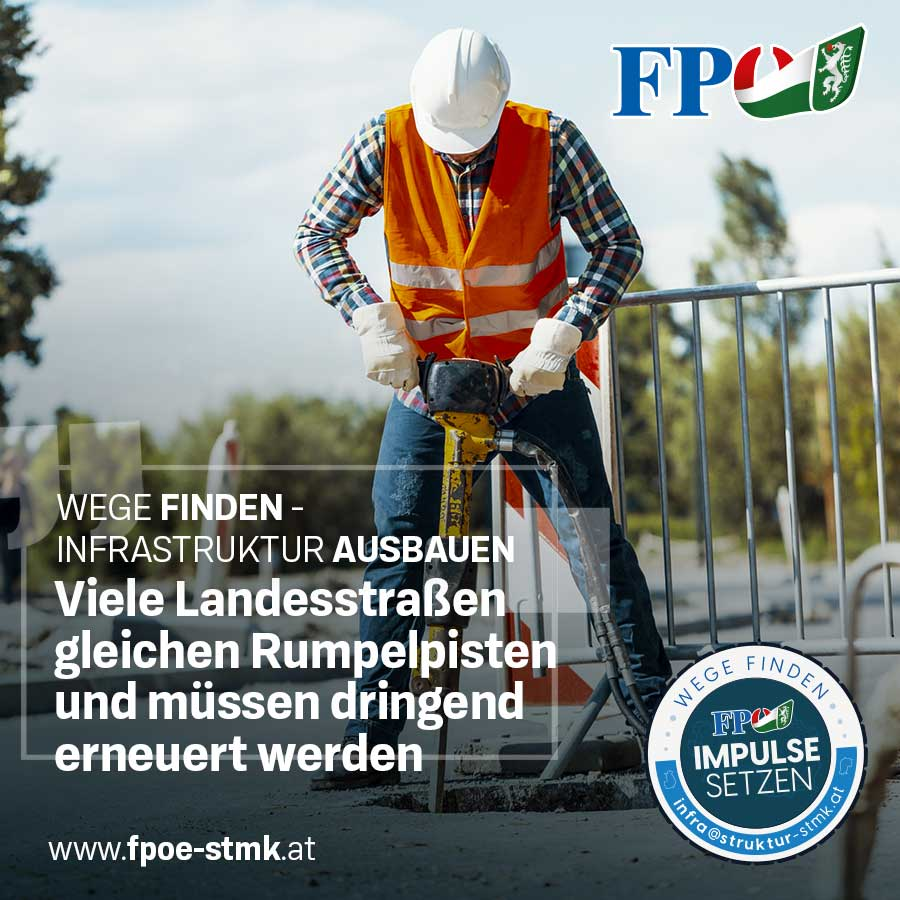

Impulse setzen!
Das steirische Landesstraßennetz umfasst rund 5.000 Kilometer. Der Zustand vieler Landesstraßen in der Steiermark ist teilweise äußert besorgniserregend und die Fahrbahnoberfläche lässt vielerorts zu wünschen übrig: Fahrbahnschäden, marode Straßenbankette und Schlaglöcher sind nicht nur nervig, sondern bergen auch ein enormes Sicherheits- und Unfallrisiko. Viele Straßen gleichen Rumpelpisten und müssen dringend erneuert werden.
Kennst auch du eine solche Straße? Mit unserer neuen Smartphone-App „INFRA-STMK“ kannst du künftig auf Schlaglöcher und Fahrbahnschäden hinweisen, um eine raschere Behebung dieser zu erwirken. Einfach ein Foto davon hochladen, eine kurze Beschreibung und den Ort hinzufügen – und schon kümmern wir uns darum.
Jetzt ist es an der Zeit, die richtigen Impulse zu setzen, Straßen zu sanieren und das ländliche Wegenetz zu verbessern! Hilf mit!

Kontakt:
Hast du Fragen zur App oder ein anderes Anliegen die steirische Infrastruktur betreffend?
Mit unserer aktuellen Kampagne „Wege finden – Infrastruktur ausbauen“ wollen wir darauf aufmerksam machen, wie wichtig der Infrastrukturausbau in der Grünen Mark ist. Die FPÖ Steiermark tritt für die Sanierung der Straßen, den Ausbau der Infrastruktur und die Stärkung des ländlichen Raums ein. Denn eine funktionierende Infrastruktur ist der Schlüssel für den Wirtschaftsstandort Steiermark.
Solltest du Fragen haben, kannst du dich gerne an unser Bürgerbüro wenden: